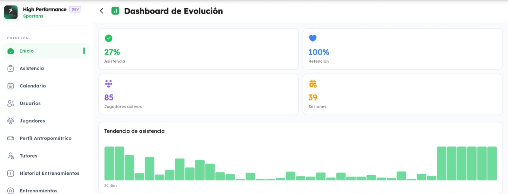
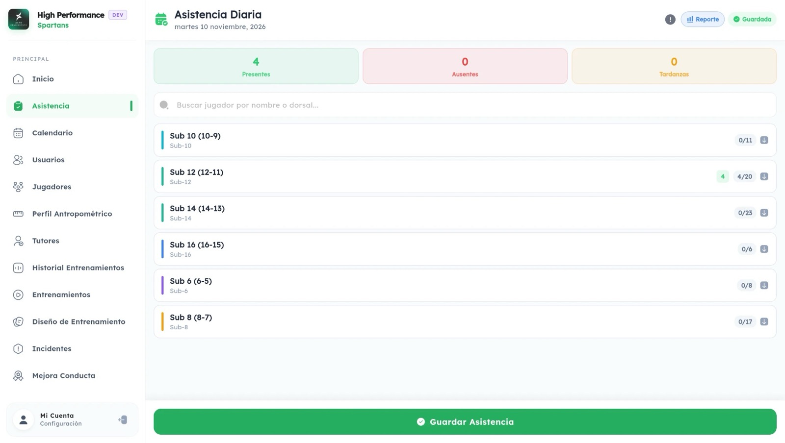
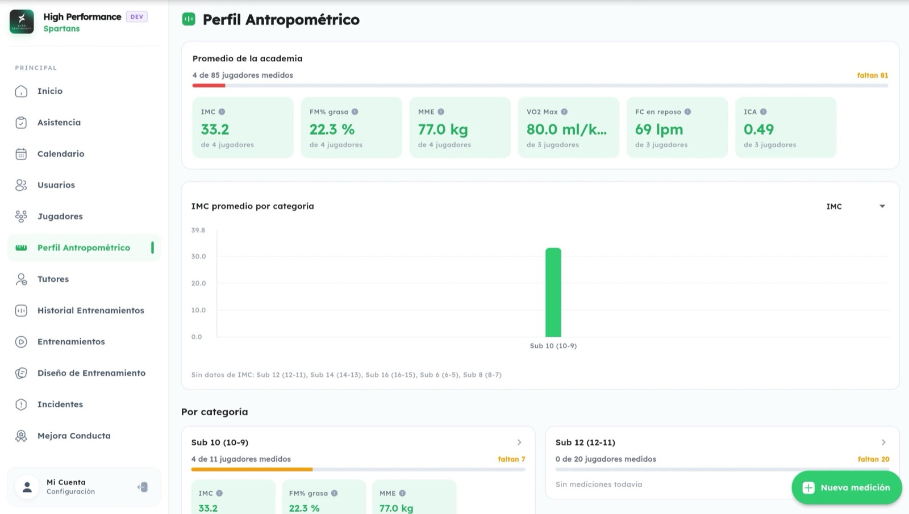

High Performance is an app that runs a soccer academy end to end. Owners set up their academy, add coaches and staff, build rosters, and connect each player to a parent account, so families can follow their child's progress. Schedules, attendance, workouts, body measurements and coaching feedback all live in one place, on the web and on Android.
The problem
Youth academies juggle a lot: dozens of players across age categories, training schedules, attendance, physical development and behavior, usually spread across spreadsheets, paper and group chats. Coaches lose track of the details, and parents have little visibility into how their child is actually developing.
Who it's for
Run the academy
Create the academy, its branches and age categories, add staff, and see attendance, retention and growth on a dashboard.
Run the training
Plan workouts, take attendance, record body measurements, and log what each player did well or needs to improve.
Follow their child
A linked parent account to keep up with schedules, attendance and progress, with push, email and SMS notifications.
What it does
Academy & rosters
Academies with branches and age categories (Sub-6 to Sub-16), players with positions and status, and parent accounts with an authorization flow.
Training
A training calendar, reusable workout templates split into warm-up, main and cool-down phases, and a full training history.
Attendance
Daily attendance by category, with present, absent and late counts, plus reports and attendance trends over time.
Biometrics
Anthropometric profiles: BMI, body fat %, muscle mass, VO2 max, resting heart rate and more, averaged by category.
Feedback & behavior
Coaches log effort and performance notes so players and parents see what improved and what to work on.
Incidents
Injuries and disciplinary incidents recorded with severity, so nothing important gets lost.
A look at the app
The app is in Spanish for now, since the first academies are in Mexico and Venezuela. English support is already built into the codebase and is coming next.



How it's built
The app is a full-stack monorepo: a Go backend that serves a GraphQL API, and a single Flutter app that runs on the web and on Android (and can also target iOS and desktop).
| Layer | Technology |
|---|---|
| Backend | Go, GraphQL (gqlgen), PostgreSQL 16 with GORM, Redis 7 for caching and pub/sub |
| Frontend | Flutter & Dart, BLoC state management, go_router, Material 3 |
| Security | JWT authentication, role-based permissions scoped to the whole platform, an academy, or a branch |
| Notifications | Push (Firebase Cloud Messaging), email and SMS |
| Infrastructure | Docker, database migrations, separate development, test, staging and production environments |
| Hardware | IoT / MQTT support for wearable devices |
Engineering highlights
- Clean architecture on both sides. The backend separates its GraphQL resolvers, business logic and database access. The Flutter app is split into domain, data and presentation layers, with a BLoC for each feature.
- Permissions built into the API. Custom GraphQL directives check login, permissions and academy membership on every request, so a coach only ever sees their own academy's data.
- Multi-academy and multi-sport ready. Branches, age categories, and sport-specific positions and metrics let the same system serve very different academies.
- One codebase, many platforms. The same Flutter code ships as a web app and an Android app.
Status & what's next
High Performance is fully functional and being tested by real academies in Mexico and Venezuela. Next up are an English version, continued refinement based on academy feedback, and expanding to more academies.